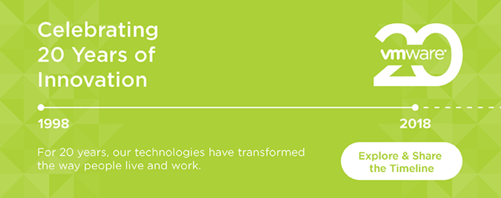
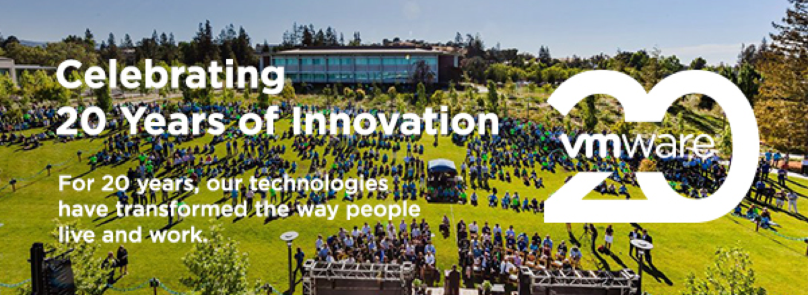

Founded in the year of 1998, VMware hits its 20 year anniversary in 2018. For this project, our team created a web-based interactive timeline to retrospect the company's major milestones in the past 20 years. I was the designer in team to design, define, and deliver the mobile version. Check it live HERE.
Deliverables: Branding / Web Design / Interaction Design
Tool used: Sketch


Web

Mobile